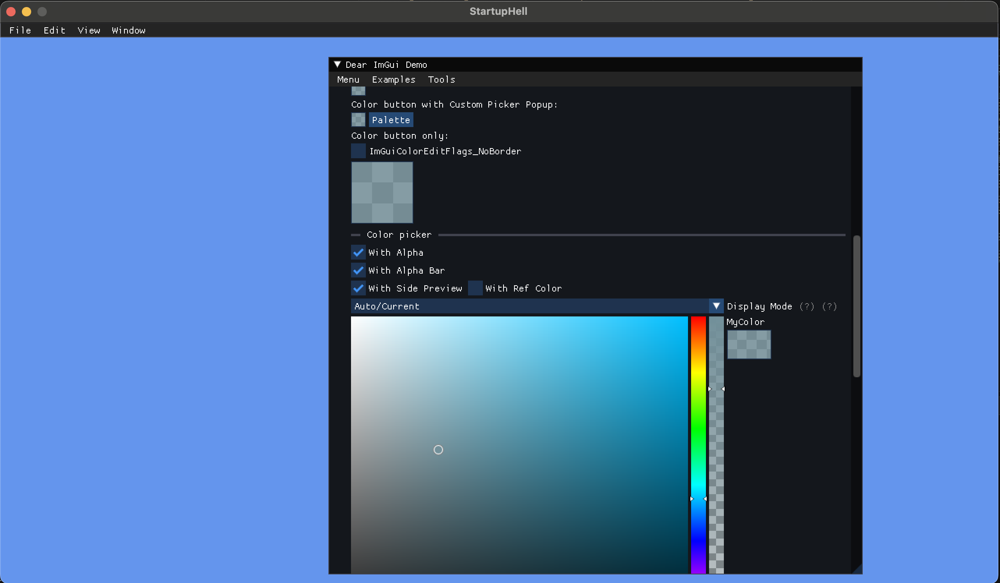
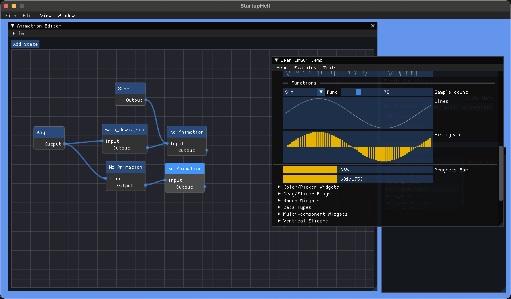
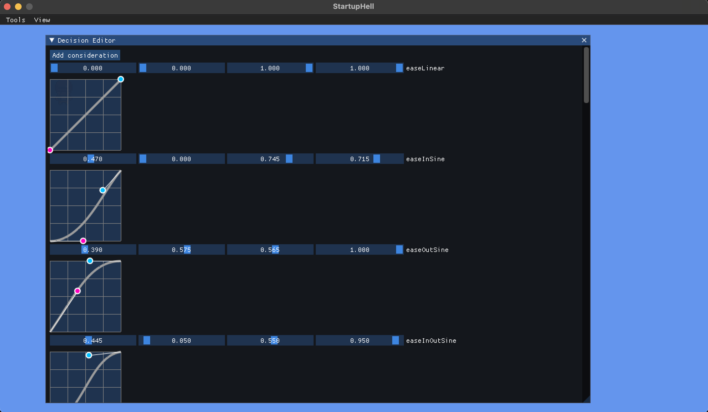

Integrating Dear ImGui with MonoGame
I've been messing around with gamedev on my M2 Mac and because I enjoy making things harder on myself apparently, I'm trying not to use Unity.
One of the goals for my fiddling was to be able to learn more about Dear ImGui, an immediate-mode GUI library that's widely used across the industry for custom debug views and tooling. Getting ImGui working with Monogame on my mac has been a fun adventure in building and maintaining native dependencies so I figured I'd write a bit about how I got it working.
ImGui Native Dependencies
I made the decision to separate all of the native code work out from my game code and just copy over the built binaries to a lib folder in that project.
In the native project, I made a fork of this supremely useful OSS project:
- cimgui: A generator to create a C wrapper around ImGui
cimgui takes a dependency on Dear ImGui through a Git submodule - the workflow is to update that submodule to the version of ImGui you want to use and then re-run the cimgui generator. Doing that requires LuaJIT which is trivially installed on OSX with brew install luajit and non-trivially installed on Windows with downloading things and setting path variables 😊
Once you've got the C bindings generated you can use CMake to generate a Makefile or Visual Studio solution and compile the binaries for your platform. Done!
ImGui.NET Wrapper
Once you've got some binaries, the next step is to allow for interop with C#. Thankfully, this project exists:
- ImGui.NET: A generator that creates C# bindings and interop automatically from cimgui
cimgui creates several artifacts as part of its generation process which ImGui.NET uses to intelligently generate C# methods and an interop layer so you don't have to do annoying pointer pinning every time you want to call an ImGui function. The two files you need from cimgui/generator are: definitions.json and structs_and_enums.json
Place those files in src/CodeGenerator/definitions/cimgui and run the CodeGenerator project from Visual Studio. That will output all your generated .cs files to the project's bin folder which you can then copy over to /src/ImGui.NET/Generated. Finally, compiling ImGui.NET from Visual Studio will give you an ImGui.NET.dll you can reference from your MonoGame project.
You'll also need to put your native binaries you built earlier in a place your MonoGame executable can see them. I have a python script that copies the appropriate binaries from my lib folder to my game's output directory to make sure they're always up to date and in the right spot.

Extending ImGui - ImNodes, ImPlot and ImGuizmo
If you want even more UI tools to play with, ImGui.NET also supports three additional ImGui-based libraries:
- cimnodes: A tool set for creating node-based visual scripts, similar to Unreal Blueprints
- cimplot: A set of graphing and plotting tools for ImGui
- cimguizmo: A library of 3d gizmos, also contains a sequencer and graph editor that are not parsed by the C generator.
The process for including these libraries is almost exactly the same as for ImGui - simply check out the version you want in the appropriate native library and run the LuaJIT generator - it's required that these dependencies all live next to the cimgui dependency in your folder structure, e.g.
- deps
- cimgui
- cimplot
- cimnodes
- cimguizmo
Once those are generated, copy over the above JSON files to the appropriate subfolder in ImGui.NET/src/CodeGenerator/definitions and run the code generator with the command line flag for the library you want to build (the options are in CodeGenerator/Program.cs). Finally copy those generated files back over to the appropriate ImGui.NET/<project>/Generated folder and build the library.
Note: as of this writing the upstream ImGui.NET does not correctly generate ImNodes which is why I'm linking to all my forks of these projects - they all are set to versions of each library that play nicely with each other and contain fixes to allow everything to work.

Extending ImGui Even Further - Custom Widgets
The final hurdle came when I needed a bezier curve editor for my game's tooling. I found a great looking tool on the ImGui discussion page but it requires ImGui calls that are only available in imgui_internal.h which is not exposed via ImGui.NET. Instead of trying to expose these calls to C# I decided it would be easier and more extensible to just build the widgets in C++ and invoke them from C#.
Here I define a C-style header with the appropriate API flags to tell the compiler not to mangle the function names and include this header from a .cpp file that implements the widget. Then, using CMake, I can create a native binary that gets built in a manner similar to cimgui.
Finally, I needed my own translation layer between the new native code and my C# project as I didn't want to modify ImGui.NET to be aware of my new classes. I created my own C# project with two files: Wrapper.cs and Interface.cs. Wrapper simply declares the native functions and the appropriate DllImport attributes, while Interface defines the C# API my library will expose and handles the native calling messiness in a similar way to ImGui.NET.

Final thoughts
If you made it this far you're probably trying to integrate ImGui into your own C# project, hopefully this guide has been helpful. I've open sourced my native dependencies library here, I hope it helps!